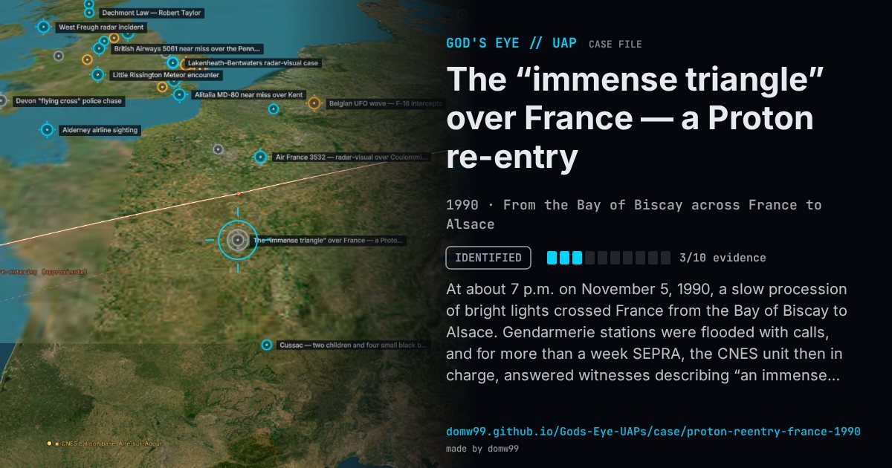

The “immense triangle” over France — a Proton re-entry

At about 7 p.m. on November 5, 1990, a slow procession of bright lights crossed France from the Bay of Biscay to Alsace. Gendarmerie stations were flooded with calls, and for more than a week SEPRA, the CNES unit then in charge, answered witnesses describing “an immense luminous triangle”; the astronaut Jean-Pierre Haigneré was among them, and technicians at the CNES balloon base at Aire-sur-Adour held a launch to watch. On November 8 NASA identified the re-entry of object 20925, the third stage of the Proton rocket that had put the Gorizont 21 satellite into orbit, and CNES confirmed its track across France. The case, which fell in the middle of the Belgian wave, is a standard example of how a known re-entry is reported as a structured craft.
Explanation
The re-entry of the third stage of the Soviet Proton rocket that launched Gorizont 21 (catalogue object 20925, 1990-094C), identified by NASA on November 8 and confirmed by CNES orbit specialists; GEIPAN classes the case A, fully explained.
What was seen
Shape: Three main lights in a group, read by many as an immense luminous triangle, with sparks and smoke trailing
Witnesses: Thousands, including CNES astronaut Jean-Pierre Haigneré and balloon technicians at Aire-sur-Adour
Duration: A minute or two
Sources
- GEIPAN case 1990-11-01225, re-entry of a Proton stage (in French)
- ALSACAT — witness reports from Alsace, November 5, 1990
Browse
- France
- 1990s
- Identified
- Tracked object events
- Official government documents
- Many independent witnesses
- Lights and fireballs
- Triangles and V shapes